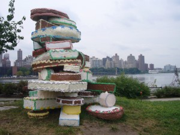
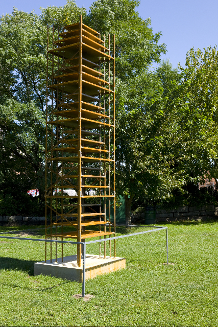
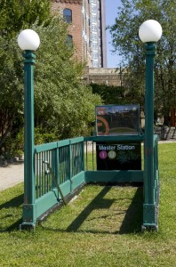

-
EAF at Socrates Sculpture
by Alice Gregory October 1, 2009
The Emerging Artist Fellowship Exhibition opened at Socrates on a warm and sunny Sunday afternoon, the diverse crowd enjoying what felt like summer’s last hurrah. Dogs ran, adults wandered and children explored. Certain pieces drew the kids in like industrial strength magnets. While watching them frolic and interact, I was reminded of a remark made in the August issue of Interview Magazine by Dasha Zhukova. In the summer of 2008, the Russian socialite, fashion designer and magazine editor opened the Garage Centre for Contemporary Culture Moscow, a Bakhmetevsky bus depot-turned-contemporary art space. Born in the Russia and raised in Los Angeles, Zhukova is positioned perfectly to juxtapose old world and new world customs:
Before I was in California, I was in Houston, Texas. That was crazy. The very first meal I had in the U.S. was Froot Loops, and I was like, ‘What is this? We do not eat colorful circles for breakfast.’ I was used to pancakes with meat stuffed in them. Everything was different.
And while Zhukova provides Moscow with hip, modern art, her offhand culinary comparison offers a convenient dichotomy with which to organize the 2009 Emerging Artist Fellowship Exhibition at Socrates Sculpture Park. “The only site in the New York Metropolitan area specifically dedicated to providing artists with the opportunities to create and exhibit large-scale work,” Socrates Sculpture Park, outdoors and in Long Island City, is a far cry from Russia. It is remarkable, even in the case of something like sculpture, the extent to which these two poles, of bright, if empty, artifice or of a more subtle nourishment, can be seen at work in cultural production.
The show, which opened on September 13, 2009 and which is up until March 7, 2010, features the work of seventeen emerging artists. In general, each of these works seems to begin either with the heavily processed neon of Fruit Loops, or with the duller, pragmatism of pancakes stuffed with meat. Unlike painting, sculpture demands a certain physical interaction, circumnavigation and seizing of multiple viewpoints. With more facets and surfaces, literally more dimensions, sculpture is marked, to an extent, by a signifigant degree of ambiguity in these two modes of perception and experience. The coups of the 2009 EAF show are those works that succeed at once in their initial, visceral impact while continuing to unfold their meaning after one has walked away.
Emerging Artist Fellows are selected annually and awarded a grant, a residency in the Park’s outdoor studio and the access to tools and materials. The specific work and its final placement in the park though is only ever loosely curated; the artists themselves have significant input. This year, the result is a sometimes jarring, sometimes evocative interplay between the sixteen sculptures (one is a collaboration). The arrangement of the works at times encourages a malevolent reading: are these two kinds of sculptures, two ways of seeing vying for attention or legitimacy? Or more benevolently, is the confrontation playful, symbiotic? The show’s anatomy, the very blueprint of the park, begs theses questions while providing very little in the way of prescriptive answers.
Aaron King’s Untitled (Someone Left the Cake Out in the Rain), a plentiful pile of giant-scale cakes, constructed of lath, concrete, and paint, felt like a meeting between Wayne Thiebaud and Claes Oldenburg. King’s piece packs an unexpected punch. Irresistibly tactile, deliciously decorated and charmingly colored, the piece is iced with “Do Not Step,” “No Climbing” and “No Sitting” – directive warnings that cut the sweetness perfectly.
Though the children could not climb King’s desserts, they could walk on and follow Lynn Kobel’s nearby, sixty-foot, Smithson-esque yellow brick road, Launch. Like King’s cakes just beside it, the shiny, elevated, ceramic path appears much more lighthearted at first step than it does at its end. Unwinding straight to the bank of the East River, Kobel makes the comparison between Manhattan (McHattan?) and Oz all but inevitable.
The little boys swarmed like flies to Kon Trubkovich’s Freefall is Free For All, a crushed car of American make and 1970s scale, that is enclosed by a chainlink fence. It would seem that the old cultural industry stalwarts of colossal destruction and megawatt violence have not stopped seducing young boys. The kids, entranced by the automotive corpse and annoyed by the fence that separated them from the car, likely missed the barrier’s symbolism, which offered a paradoxical mutual protection to both the viewer and the car itself, a well-timed display just three months after GM filed for bankruptcy.
Another leviathan is Tamara Kostianovsky’s The Persistence of Agony, a weatherproof vinyl whale. Dissected and anatomically simplified, the bulging figure is both playful in its vibrant, though violent, color and clinical in its clean, soft touch and chemical scent (no ambergris here). The climbing children were happy to ignore, or perhaps unable to even discern, the grotesque nature of their playground.
Sugar (King), fantasy (Kobel), symbols of adulthood (Trubkovich), animals (Korstianovsky): these seem to be the very tokens of childhood, and it makes sense that they were not only among the most visually accessible sculptures, but also the most child-friendly. The perversity of the sculptures, like all perversity perhaps, was apparent only to the adults; the children were blithely oblivious. They climbed on representations of dead animals, were mesmerized by a totem of their country’s collapse, followed a path that lead only to disillusion and were not allowed to play on what looked like the most joyous piece of all. Ignorance is bliss.
The counterpart to these fortified Froot Loop sculptures are predictably more muted in tone, chillier in material, and less popular amongst the children. Zak Kitnick’s First From the Means is a monumental tower of steel shelving units. The rusted shelves are nested in such a way as to evoke images of terra cotta ziggurats. Stark and almost Bauhaus from afar, upon closer inspection the tower’s gradient of natural corrosion lends an unexpected Baroque finish. The audacity of presenting such an ironically “indoor” feature of domesticity – the shelf – to the elements implies the comedic delusion that it will last and perhaps even function. But rusted shelves within shelves cannot store anything, particularly once they’ve fallen to the ground. First From the Means addresses the inevitable ruin that even the most monolithic and seemingly permanent structures will eventually face.
Again, this theme of decay is tackled by Mads Lynnerup’s Fix It!, a free-standing perimeter of blue plywood walls drilled with peepholes through which to observe a suspended construction site littered with I-beams, bricks, cinder blocks, scaffolding, concrete, wheel-barrels, toolboxes, and a corrugated metal shed. HD video monitors play loops of shoe and tool repair shops, antiquated enterprises in an era of planned obsolescence. The items inside are choreographed in such a way as to imply new construction, rather than restoration. The piece is distinctly site-specific in Long Island City, where luxury condos seem to pop up every other day.

Brina Thurston’s recreation of a green MTA subway entrance is certainly the show’s best use of tromp l’oeil. The uncompromised attention to detail ensures the utter believability of the replica until the very moment when it becomes clear that the unblemished lawn where there would normally be a staircase prevents any sort of entry whatsoever. Rambling viewers seemed to all agree that the piece was a cruel joke, But seriously, this would be such a convenient stop. There goes the neighborhood.The seven sculptures described here are merely seven out of the show’s sixteen diverse sculptures. It’s a complete meal, this show. Intellectually demanding art is often thought an acquired taste; while immediately appealing art is something we outgrow. The Emerging Artist Fellows at Socrates Sculpture park have found a way to provide their public with a bit of both, and when viewed as an ensemble, the group is particularly balanced. On display through the winter, all will inevitably fare the seasons differently. The park is worth multiple walk-throughs in the upcoming months, during which the decision of what to take in can be made again and again.

{kind=link}
{kind=link}
{kind=link}
{kind=link}
{kind=link}
1 Comment
Where for Art Thou? « Fitness NYC
[...] EAF 09 (Emerging Artists Fellowship 2009) at the Socrates Sculpture Park Exhibit runs through April [...]